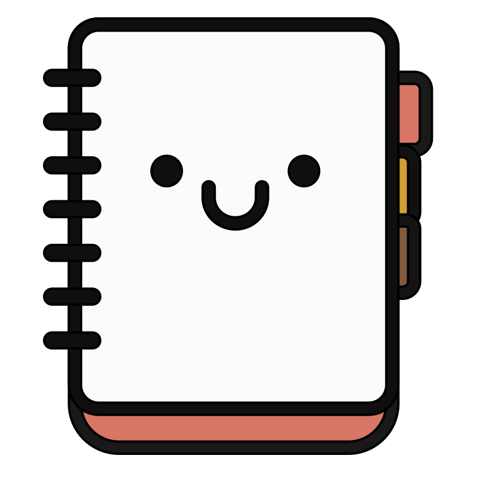
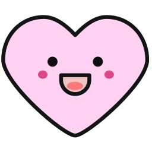

<!DOCTYPE html>
<html lang="zh-CN">
<head>
  <meta charset="UTF-8">
  <title>Survey + Lexical Decision Task</title>

  <script src="https://unpkg.com/jspsych@7.3.3"></script>
  <script src="https://unpkg.com/@jspsych/plugin-html-button-response@1.1.2"></script>
  <script src="https://unpkg.com/@jspsych/plugin-html-keyboard-response@1.1.2"></script>
  <script src="https://unpkg.com/@jspsych/plugin-fullscreen@1.2.0"></script>
  
  <link rel="stylesheet" href="https://unpkg.com/jspsych@7.3.3/css/jspsych.css">
  <link rel="stylesheet" href="https://unpkg.com/@jspsych/plugin-survey@1.0.1/css/survey.css">
  <link rel="stylesheet" href="style_sheet.css">

</head>

<body>

<script>
  /* -----------------------------------------------------------
     0. ORDERED LIST SELECTION
     ----------------------------------------------------------- */
  var list_versions = [
    'L1A_difft', 'L1B_difft', 'L2A_difft', 'L2B_difft', 'L3A_difft', 'L3B_difft',
    'L4A_nop', 'L4B_nop', 'L5A_nop', 'L5B_nop', 'L6A_nop', 'L6B_nop'
  ];
  var list_index = Number(localStorage.getItem('ldt_next_list_index') || 0);
  var version_label = list_versions[list_index % list_versions.length];
  localStorage.setItem('ldt_next_list_index', String((list_index + 1) % list_versions.length));
  var experimental_stimuli = null;
  var fillers = [];

  var save_filename = "ldt_data_" + version_label + ".csv";

  // Load stimuli and initialize
  fetch('./stimuli_ldt.json')
    .then(response => {
      if (!response.ok) {
        throw new Error(`HTTP error! status: ${response.status}`);
      }
      return response.json();
    })
    .then(data => {
      console.log('Stimuli loaded:', data);
      console.log('Assigned list version:', version_label);
      experimental_stimuli = data[version_label];
      if (!experimental_stimuli) {
        throw new Error('List version ' + version_label + ' not found in stimuli_ldt.json');
      }
      console.log(version_label + ' items:', experimental_stimuli.length);
      initializeExperiment();
    })
    .catch(error => {
      console.error('Error loading stimuli:', error);
      alert('Error: Could not load stimuli_ldt.json or list version ' + version_label + '. Check console for details.\n' + error.message);
    });

  function initializeExperiment() {
    /* -----------------------------------------------------------
       1. INITIALIZATION
       ----------------------------------------------------------- */
    // Generate a simple participant ID based on timestamp
    var participant_id = new Date().getTime().toString();
    
    const jsPsych = initJsPsych({
      on_finish: function() {
        console.log('Experiment finished. Data can be saved by the browser.');
      }
    });

    try {
      const consentData = JSON.parse(sessionStorage.getItem('ldt_consent_data') || '[]');
      consentData.forEach(row => jsPsych.data.write(row));
      sessionStorage.removeItem('ldt_consent_data');
    } catch (error) {
      console.warn('Consent data could not be restored:', error);
    }

    // ADD ALL DATA PROPERTIES BEFORE RUNNING TIMELINE
    var properties = {
        list_version: version_label,
        participant_id: participant_id
    };
    
    jsPsych.data.addProperties(properties);

    let timeline = [];

  const enter_fullscreen = {
  type: jsPsychFullscreen,
  fullscreen_mode: true,
  message: '<div style="text-align: center;"><div class="instruction-highlight"><p class="instruction-highlight-text"> 点击下方按钮，实验将切换至全屏模式。开始前请仔细阅读说明。</p></div></div>',
  button_label: '阅读说明'
};

  const instructions = {
    type: jsPsychHtmlButtonResponse,
    stimulus: '<p class="instruction-text">你好！你即将参与一项词汇判定实验。开始之前，请注意：<strong>本实验必须在带有实体键盘的电脑上进行，在平板电脑或手机上将无法正常运行。</strong></p><p class="instruction-text">实验中的每个试题均由一组四字成语组成（可能是正确的成语，也可能是错误的）。</p><p class="instruction-text">在每个试题开始时，屏幕上会出现一张龙的图片。按键盘上的任意键即可显示汉字。汉字将逐个快速呈现在屏幕上。当出现第四个（即最后一个）汉字时，你需要判断刚才看到的是否是一句正确的成语。</p><div class="instruction-highlight"><p class="instruction-highlight-text">当出现最后一个汉字时，请按键盘上的：<br><strong>A = 是（这是一句正确的成语）<br>L = 否（这并不是正确的成语）</strong></p></div><div class="instruction-highlight" style="border-color: #b30000; background-color: #ffe6e6;"><p class="instruction-highlight-text" style="color: #b30000; font-size: 26px;">请注意：请尽可能快速地做出选择！如果你反应太慢，屏幕上会出现提示提醒你提高速度。</p></div><p class="instruction-text">每次作答后，龙的图片会再次出现。当你准备好后，按键盘上的任意键即可开始下一题。</p><p class="instruction-text">建议你在安静、光线充足的环境中进行实验，并确保网络连接稳定。接下来会有 5 个练习题，帮助你熟悉实验流程。当你准备好时，点击按钮即可。</p>',
    choices: ['开始练习'],
    button_html: '<button class="jspsych-btn btn-primary">%choice%</button>'
  };

  const params = { fixT: 500, wordT: 350, blankT: 100, ldtT: 300000000 };

  /* -----------------------------------------------------------
     3. PRACTICE STIMULI
     ----------------------------------------------------------- */
  const practice_stimuli = [
  { item: 'p1', string: "画蛇添足", cond: "practice" },
  { item: 'p2', string: "名副其实", cond: "practice" },
  { item: 'p3', string: "层出不水", cond: "practice" },
  { item: 'p4', string: "义无反顾", cond: "practice" }, 
  { item: 'p5', string: "一厢情愿", cond: "practice" } 
  ];

  /* -----------------------------------------------------------
     4. TRIAL FACTORY
     ----------------------------------------------------------- */
  function make_trial(stim_data, is_practice=false) {
    var trial_sequence = [];
    
    // Handle both 'string' (practice) and 'spelling' (experimental) field names
    var stimulus_text = stim_data.string || stim_data.spelling;

    // Fixation Cross - wait for participant to press any key to continue
    trial_sequence.push({
      type: jsPsychHtmlKeyboardResponse,
      stimulus: '',
      choices: "ALL_KEYS",
      trial_duration: null,
      css_classes: ['fix'],
      response_ends_trial: true
    });

    // 500ms blank screen after dragon
    trial_sequence.push({
      type: jsPsychHtmlKeyboardResponse,
      stimulus: '',
      choices: "NO_KEYS",
      trial_duration: 500
    });

    // Rapid presentation of the first 3 characters
    for(let i=0; i<3; i++) {
        trial_sequence.push({
            type: jsPsychHtmlKeyboardResponse,
            stimulus: stimulus_text[i],
            choices: "NO_KEYS",
            trial_duration: params.wordT,
            css_classes: ['pre']
        });
        trial_sequence.push({ 
          type: jsPsychHtmlKeyboardResponse, 
          stimulus: '', 
          choices: "NO_KEYS", 
          trial_duration: params.blankT 
        });
    }

    // Final target character
    trial_sequence.push({
      type: jsPsychHtmlKeyboardResponse,
      stimulus: stimulus_text[3],
      choices: ['a', 'l'], 
      data: {
        task: is_practice ? 'practice_target' : 'CB.task', 
        full_word: stimulus_text,
        item_id: stim_data.item,
        condition: stim_data.cond || stim_data.condition,
        stimulus_type: is_practice ? 'practice' : ((stim_data.cond === 'filler' || stim_data.condition === 'filler') ? 'filler' : 'experimental'),
        // Map stimulus values: 'true' (correct idiom) -> 'a', 'false' (incorrect idiom) -> 'l'
        correct_response: (stim_data.correct_response === 'true') ? 'a' : 'l'
      },
      on_finish: function(data){
        // Determine if response is correct: compare participant response with correct_response
        data.accuracy = (data.response === data.correct_response) ? 'CORRECT' : 'WRONG';
      },
      trial_duration: params.ldtT,
      css_classes: ['ldt'],
    });

    // 1 second blank screen after LDT response
    trial_sequence.push({
      type: jsPsychHtmlKeyboardResponse,
      stimulus: '',
      choices: "NO_KEYS",
      trial_duration: 1000
    });

    return trial_sequence;
  }

  /* -----------------------------------------------------------
     5. BUILD TIMELINE
     ----------------------------------------------------------- */
  timeline.push(enter_fullscreen);
  timeline.push(instructions);

  practice_stimuli.forEach(item => {
    timeline = timeline.concat(make_trial(item, true));
  });

  const start_real_experiment = {
    type: jsPsychHtmlButtonResponse,
    stimulus: `
      <div style="text-align: center;"></div>
      <div class="instruction-text">
        <div class="instruction-highlight">
          <p class="instruction-highlight-text">练习阶段已结束。<br>点击下方按钮即可正式开始实验。记住，反应一定要尽可能快哦！</p>
        </div>
      </div>`,
    choices: ['开始正式实验'],
    button_html: '<button class="jspsych-btn btn-primary">%choice%</button>'
  };
  timeline.push(start_real_experiment);

  // Add experimental stimuli to timeline
  // Each list in stimuli_ldt.json already contains fillers mixed in
  if (typeof experimental_stimuli !== 'undefined' && experimental_stimuli.length > 0) {
      experimental_stimuli.forEach(item => {
        timeline = timeline.concat(make_trial(item));
      });
  } else {
    console.error("Stimuli not found or empty");
  }

  timeline.push({ type: jsPsychFullscreen, fullscreen_mode: false });

  /* -----------------------------------------------------------
     9. SAVE DATA
     ----------------------------------------------------------- */
 const save_data_trial = {
    type: jsPsychHtmlKeyboardResponse,
    stimulus: '<p class="instruction-text">实验结束。数据正在生成并保存，请稍候...</p>',
    choices: "NO_KEYS",
    trial_duration: 2000,
    on_finish: function() {
      jsPsych.data.get().localSave('csv', save_filename);
    }
  };
  timeline.push(save_data_trial);

   /* -----------------------------------------------------------
     10. ENDING SCREEN
     ----------------------------------------------------------- */
  const thank_you_screen = {
    type: jsPsychHtmlKeyboardResponse,
    stimulus: `
      <div class="instruction-text text-center thank-you-screen">
        <div style="text-align: center;"></div>
        <div class="instruction-highlight">
          <p class="instruction-highlight-text">感谢你参与我们的实验！如果你有任何问题，或者想了解更多相关信息，随时欢迎通过电子邮件联系我们。</p>
        </div>
        <div class="instruction-highlight">
          <p class="instruction-highlight-text">联系方式:</p>
          <p>Chiara Bogoni: <a href="mailto:chiara.bogoni@student.unibz.it">chiara.bogoni@student.unibz.it</a></p>
          <p>Linda Badan: <a href="mailto:linda.badan@unipd.it">linda.badan@unipd.it</a></p>
          <p>Francesco Vespignani: <a href="mailto:francesco.vespignani@unipd.it">francesco.vespignani@unipd.it</a></p>
          <p>Eduardo Navarrete: <a href="mailto:eduardo.navarrete@unipd.it">eduardo.navarrete@unipd.it</a></p>
        </div>
        <p class="closing-message-small">数据已自动保存。你现在可以关闭此窗口。</p>
      </div>
    `,
    choices: "NO_KEYS" 
  };

  timeline.push(thank_you_screen);

  // Start Experiment
  jsPsych.run(timeline);
  } // End initializeExperiment function

  // Ensure DOM is ready before attempting fetch
  if (document.readyState === 'loading') {
    document.addEventListener('DOMContentLoaded', function() {
      // Fetches will start after this event
    });
  }

</script>
</body>
</html>
